Rattlesnake Demonstration
This page contains an example demonstrating some usages of SDynPy. In this analysis, we will load in Rattlesnake data, parse the dataset to get the data we want, compute frequency response functions (FRFs), and fit modes to the data. We will then load in an exodus file of the same structure used in the test and compare test data against finite element data.
Contents
Imports
For this project, we will import the following modules, including the SDynPy module.
import numpy as np # Used for array manipulations
import netCDF4 as nc4 # Used to load the data file
import matplotlib.pyplot as plt # Used to create figures
plt.close('all') # Close all open matplotlib figures
import pptx # Used to load in powerpoint files
import sdynpy as sdpy
Load in Test Data
The first thing we will do is load in the data. We will do this using the
sdpy.rattlesnake.read_rattlesnake_output
function. We could simply pass the file string to this function; however, we
would like to access other metadata inside the Rattlesnake output file as well,
so we load the dataset separately and then pass in a reference to the
sdpy.rattlesnake.read_rattlesnake_output
function.
# Load in the specified file
filename = r'rattlesnake_modal_data.nc4'
# Load the netCDF4 dataset
dataset = nc4.Dataset(filename)
# Extract the time data and channel table from the test
time_data, channel_table = sdpy.rattlesnake.read_rattlesnake_output(dataset)
# Plot the time data so we can see where valid data is
time_data.plot()
# Make the figure look nice
axis.set_xlabel('Time (s)')
axis.set_ylabel('Data (various types)')
axis.set_title('Rattlesnake Data')
axis.figure.tight_layout()
The time data plot is shown here:
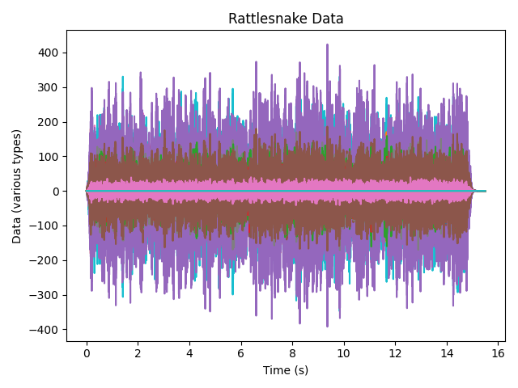{kind=link}
At this point it is worth exploring the time_data object. If we type time_data
into the IPython console, we obtain some information about the data we’ve loaded.
In [1]: time_data
Out[1]: TimeHistoryArray with shape 30 and 31745 elements per function
This tells us that there are 30 pieces of data in the test data we loaded which correspond to the 30 channels in the test. Each data array contains 31745 samples or time steps.
We can investigate what fields exist in the time_data object by using the
time_data.fields property.
In [2]:time_data.fields
Out[2]:
('abscissa',
'ordinate',
'comment1',
'comment2',
'comment3',
'comment4',
'comment5',
'coordinate')
The abscissa, or independent variable (in this case, the time value at each
sample), is stored in the time_data.abscissa field. The ordinate, or
dependent variable (in this case, the value of acceleration or
force at each sample), is stored in the time_data.ordinate field.
Because there are 30 pieces of data each with 31745 elements, the shape of the
abscissa and ordinate fields are 30 x 31745.
In [3]: time_data.abscissa.shape
Out[3]: (30, 31745)
Another important field is the time_data.coordinate field. This stores
degree of freedom information in a
CoordinateArray<sdynpy.core.sdynpy_coordinate.CoordinateArray object.
In [4]: time_data.coordinate
Out[4]:
coordinate_array(string_array=
array([['28376X+'],
['28376Y+'],
['28376Z+'],
['28560X+'],
['28560Y+'],
['28560Z+'],
['17290X+'],
['17290Y+'],
['17290Z+'],
['16733X+'],
['16733Y+'],
['16733Z+'],
['2467X+'],
['2467Y+'],
['2467Z+'],
['2392X+'],
['2392Y+'],
['2392Z+'],
['33715Y+'],
['36140Y+'],
['24046X-'],
['30947X-'],
['8579Y+'],
['12664Y+'],
['4475Z+'],
['2991Y+'],
['5457X-'],
['16733X+'],
['33715Y+'],
['28560Z+']], dtype='<U7'))
Computing FRFs
Note that there is a ramp up and down in the shaker data. We don’t want to
include these data in our analysis, so we will use the
extract_elements
method of our time_data
object to reduce the abscissa.
# Use the plot to figure out the start and stop times of the signal we want to
# analyze
time_start = 1.0
time_end = 14.0
# Time data is stored in the abscissa attribute of the TimeHistoryArray object
indices = ((time_data[0].abscissa >= time_start)
& (time_data[0].abscissa <= time_end))
# Extract elements corresponding to the indices we want to keep
truncated_time_data = time_data.extract_elements(indices)
In order to compute FRFs, we will need to separate the data into responses and references. In Rattlesnake, the responses were marked as control channels, so we can parse the channel table to understand which channels were references and which were responses.
# Separate into references and responses based on the control field of the
# channel table
response_indices = np.array(channel_table['control'].astype(bool))
reference_indices = ~response_indices
# Index the TimeHistoryArray object with the indices to pull out specific channels
responses = truncated_time_data[response_indices]
references = truncated_time_data[reference_indices]
# Now plot to see that we've separated them correctly
fig,ax = plt.subplots(2,1,sharex=True,num='Time Data')
responses.plot(ax[0])
ax[0].set_ylabel('Responses')
references.plot(ax[1])
ax[1].set_ylabel('References')
ax[1].set_xlabel('Time (s)')
The plot is shown here:
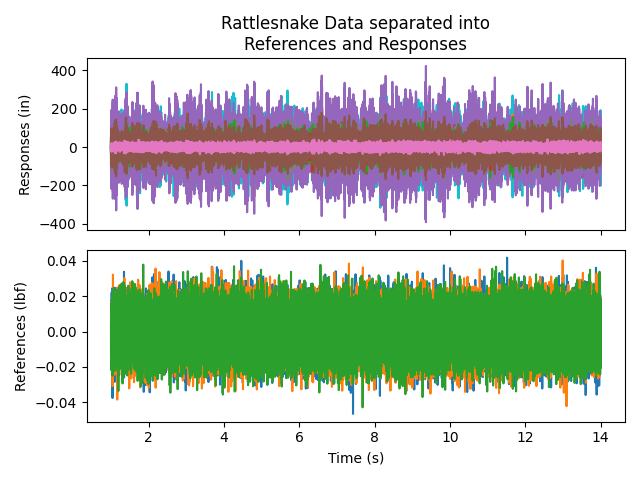{kind=link}
We can now finally compute FRFs using the static method
from_time_data.
This method is passed the reference and response
TimeHistoryArray
as well as various signal processing parameters that are extracted from the
metadata of the Rattlesnake output file. We will remove the zero frequency
line and then plot the frfs to make sure they look as expected.
# Compute FRFs from references, responses, and signal processing parameters
# from Rattlesnake
frfs = sdpy.TransferFunctionArray.from_time_data(
references, responses,
samples_per_average = dataset['Launch Random'].samples_per_frame,
overlap = dataset['Launch Random'].overlap,
window = dataset['Launch Random'].frf_window
)
# Remove the zero frequency line
frfs = frfs.extract_elements(slice(1,None))
# Plot the FRFs
axes = frfs.plot()
# Make the plots look nice
axes[0].set_title('FRFs from Rattlesnake Data')
axes[1].set_ylabel('Amplitude (in/lbf)')
axes[1].set_xlabel('Frequency (Hz)')
axes[0].figure.tight_layout()
The plot is shown here:
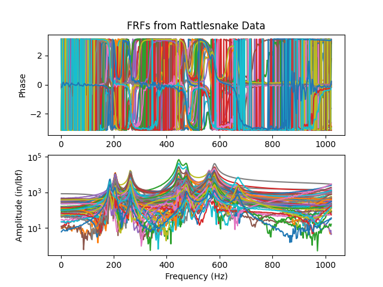{kind=link}
It can be difficult to visualize the plots on top of one another, and we really
don’t want to plot 30 separate plots, so it can be useful to quickly iterate
through the curves to ensure they all look right. This is handled well by the
sdpy.data.GUIPlot class, which
allows a user to load in a number of functions and graphically select which to
plot. By using the arrow keys, a user can quickly page through each plot.
In [5]: sdpy.data.GUIPlot(frfs)
{kind=link}
It is again worth investigating the frfs object to see what it contains.
In [6]: frfs
Out[6]: TransferFunctionArray with shape 27 x 3 and 510 elements per function
This tells us that there are 27 x 3 functions in frfs which
correspond to the 27 response channels and 3 references in the test. Each FRF
contains 510 frequency lines.
We can investigate what fields exist in the frfs object by using the
frfs.fields property. These will be identical to the time_data
because they are both subclasses of NDDataArray
In [7]: frfs.fields
Out[7]:
('abscissa',
'ordinate',
'comment1',
'comment2',
'comment3',
'comment4',
'comment5',
'coordinate')
The abscissa, or independent variable (in this case, the frequency value at each
frequency line), is stored in the frfs.abscissa field. The ordinate, or
dependent variable (in this case, the value of the transfer function),
is stored in the frfs.ordinate field.
Because there are 27 x 3 pieces of data each with 510 elements, the shape of the
abscissa and ordinate fields are 27 x 3 x 510.
In [8]: frfs.abscissa.shape
Out[8]: (27, 3, 510)
The frfs.coordinate field contains the degrees of freedom for each FRF.
However, now there is a reference coordinate and a response coordinate for each
function. Looking at the shape of frfs.coordinate, we see that there are
now two coordinate for each of the 27 x 3 functions, resulting in a final shape
of 27 x 3 x 2. We can also access reference and response coordinates using the
helper propreties response_coordinate and reference_coordinate.
Here it should also be obvious that the response coordinates vary with the row
and the reference coordinates vary with the column of the FRF matrix.
In [9]: frfs.coordinate.shape
Out[9]: (27, 3, 2)
In [10]: frfs.response_coordinate
Out[10]:
coordinate_array(string_array=
array([['28376X+', '28376X+', '28376X+'],
['28376Y+', '28376Y+', '28376Y+'],
['28376Z+', '28376Z+', '28376Z+'],
['28560X+', '28560X+', '28560X+'],
['28560Y+', '28560Y+', '28560Y+'],
['28560Z+', '28560Z+', '28560Z+'],
['17290X+', '17290X+', '17290X+'],
['17290Y+', '17290Y+', '17290Y+'],
['17290Z+', '17290Z+', '17290Z+'],
['16733X+', '16733X+', '16733X+'],
['16733Y+', '16733Y+', '16733Y+'],
['16733Z+', '16733Z+', '16733Z+'],
['2467X+', '2467X+', '2467X+'],
['2467Y+', '2467Y+', '2467Y+'],
['2467Z+', '2467Z+', '2467Z+'],
['2392X+', '2392X+', '2392X+'],
['2392Y+', '2392Y+', '2392Y+'],
['2392Z+', '2392Z+', '2392Z+'],
['33715Y+', '33715Y+', '33715Y+'],
['36140Y+', '36140Y+', '36140Y+'],
['24046X-', '24046X-', '24046X-'],
['30947X-', '30947X-', '30947X-'],
['8579Y+', '8579Y+', '8579Y+'],
['12664Y+', '12664Y+', '12664Y+'],
['4475Z+', '4475Z+', '4475Z+'],
['2991Y+', '2991Y+', '2991Y+'],
['5457X-', '5457X-', '5457X-']], dtype='<U7'))
In [11]: frfs.reference_coordinate
Out[11]:
coordinate_array(string_array=
array([['16733X+', '33715Y+', '28560Z+'],
['16733X+', '33715Y+', '28560Z+'],
['16733X+', '33715Y+', '28560Z+'],
['16733X+', '33715Y+', '28560Z+'],
['16733X+', '33715Y+', '28560Z+'],
['16733X+', '33715Y+', '28560Z+'],
['16733X+', '33715Y+', '28560Z+'],
['16733X+', '33715Y+', '28560Z+'],
['16733X+', '33715Y+', '28560Z+'],
['16733X+', '33715Y+', '28560Z+'],
['16733X+', '33715Y+', '28560Z+'],
['16733X+', '33715Y+', '28560Z+'],
['16733X+', '33715Y+', '28560Z+'],
['16733X+', '33715Y+', '28560Z+'],
['16733X+', '33715Y+', '28560Z+'],
['16733X+', '33715Y+', '28560Z+'],
['16733X+', '33715Y+', '28560Z+'],
['16733X+', '33715Y+', '28560Z+'],
['16733X+', '33715Y+', '28560Z+'],
['16733X+', '33715Y+', '28560Z+'],
['16733X+', '33715Y+', '28560Z+'],
['16733X+', '33715Y+', '28560Z+'],
['16733X+', '33715Y+', '28560Z+'],
['16733X+', '33715Y+', '28560Z+'],
['16733X+', '33715Y+', '28560Z+'],
['16733X+', '33715Y+', '28560Z+'],
['16733X+', '33715Y+', '28560Z+']], dtype='<U7'))
Creating a Test Geometry
Now that we have our data, it would be useful to create our test geometry so we can eventually visualize mode shapes. For this, we will extract geometry from a finite element model. For this test, the nodes in the channel table were named identically to the corresponding nodes in the finite element model, so we can use the node numbers to correlate degrees of freedom.
The finite element model in question is an Exodus file with an eigensolution stored in its displacement data. We will load that in, create a geometry from the model data, and then plot it to make sure it looks right.
# Load in the exodus file into an Exodus object
exo = sdpy.Exodus('exodus_eigensolution.exo')
# Create a geometry from the full finite element model
fem_geometry = sdpy.geometry.from_exodus(exo)
# Now plot the geometry
fem_geometry.plot(node_size=0,view_up=[0,1,0])
The plot of the finite element geometry is shown here:
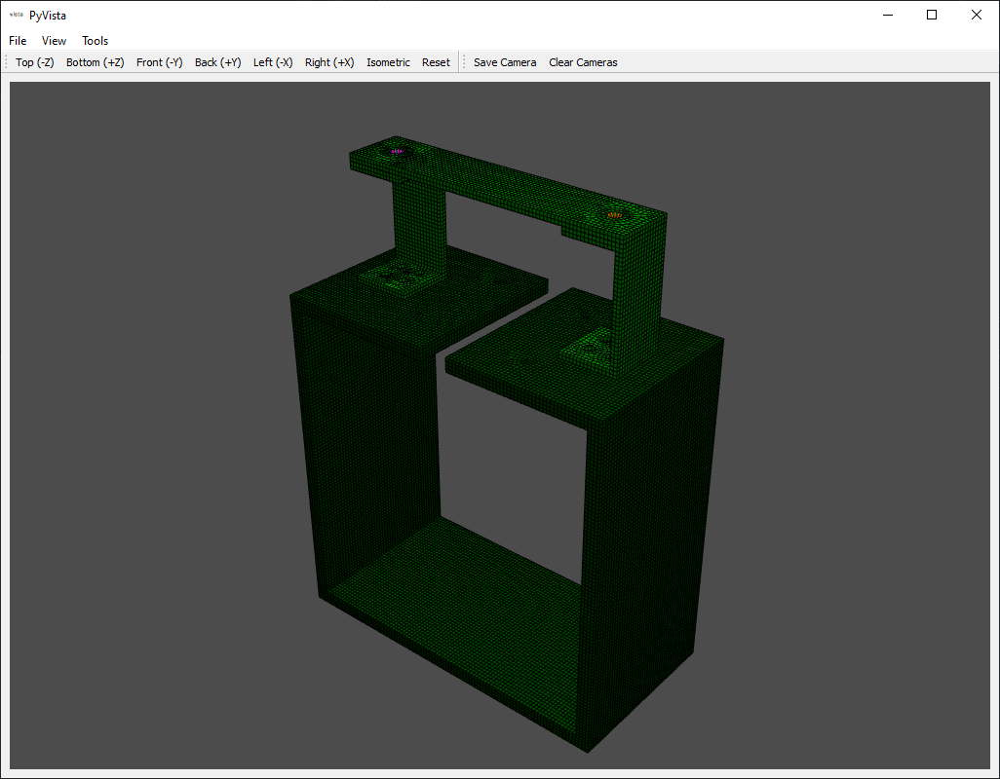{kind=link}
Now we would like to reduce the finite element geometry down to our sensor locations in the test. We first visualize the reference and response coordinates on the finite element model to make sure our bookkeeping is correct and they match the test excitation locations.
# Now plot the coordinates from our test, note we can use numpy set operations
# on CoordinateArrays
response_coordinates = np.unique(frfs.response_coordinate)
reference_coordinates = np.unique(frfs.reference_coordinate)
# Plot the coordinates on the finite element geometry
fem_geometry.plot_coordinate(response_coordinates,label_dofs=True,
plot_kwargs={'node_size':0,'view_up':[0,1,0]})
fem_geometry.plot_coordinate(reference_coordinates,label_dofs=True,
plot_kwargs={'node_size':0,'view_up':[0,1,0]})
{kind=link}
{kind=link}
Because there are common node numbers between test and analysis, we can easily
reduce down to only the nodes in our test using the reduce
method, which accepts a list of nodes to keep. Note that this will reduce the
geometry to only those nodes kept in the test, which will also destroy all elements
used to visualize the model. Make sure when plotting this geometry, ensure that
the node size is not set to zero!
# Reduce down to only the nodes that are in our test
keep_nodes = np.unique(frfs.coordinate.node)
# Call the reduce function to reduce the geometry to just the kept nodes
test_geometry = fem_geometry.reduce(keep_nodes)
# Plot to make sure it looks right
test_geometry.plot(view_up=[0,1,0])
At this point, it can be very difficult to visualize the model, as there are
only a handful of points. We will add some tracelines to make visualization a
bit easier. We can use the add_traceline
method to quickly add a traceline to the model. We can then plot it to see the
improvement. We will also save it to a file so we can load it into our graphical
curve fitters.
# Now let's add some tracelines to aid in visualization. We can pick the node
# numbers from the plot of the response coordinates
test_geometry.add_traceline([12664,17290,30947,28560,36140,33715,28376,24046,16733,8579],
description='box',color=11)
test_geometry.add_traceline([4475,2467,2991,2392,5457],
description='rc')
# Plot the test geometry now with tracelines
test_geometry.plot(view_up=[0,1,0])
# Save the test geometry to a file
test_geometry.save('rattlesnake_test_geometry.npz')
Fitting Modes to the FRFs
Now that we have data and geometry, we can perform experimental modal analysis.
We will fit modes both with SMAC and PolyMax. First we will do SMAC, so we can
call sdpy.SMAC_GUI in the
IPython console to load the GUI.
In [12]: sdynpy.SMAC_GUI(frfs)
Out[12]: <sdynpy.modal.sdynpy_smac.SMAC_GUI at 0x14fe6f05b80>
We then work through the SMAC GUI to fit shapes. The first page selects the mode type, the frequency range, and the data type.
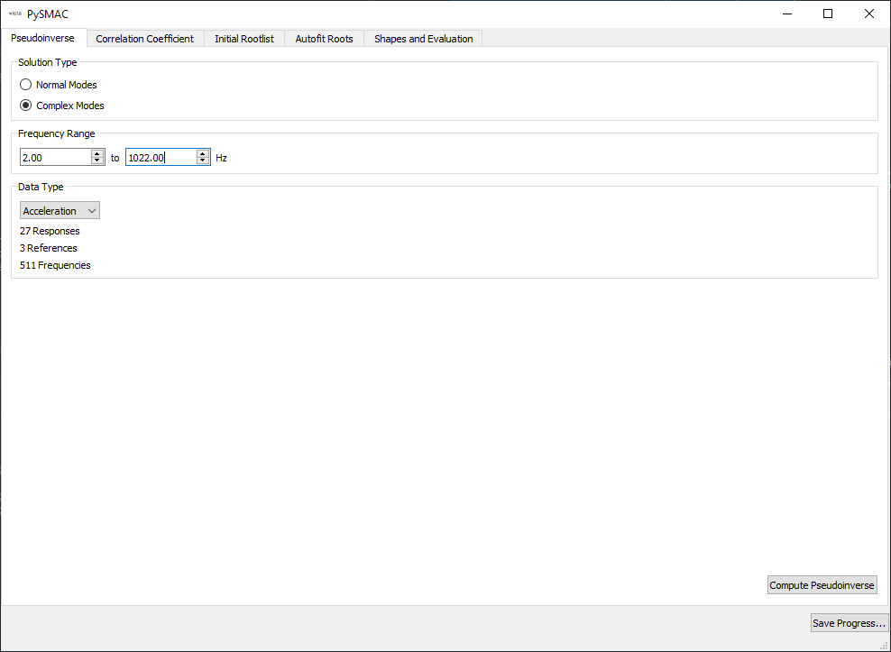{kind=link}
The second page selects initial guiesses for frequency and damping ratios for use in computing the correlation coefficient.
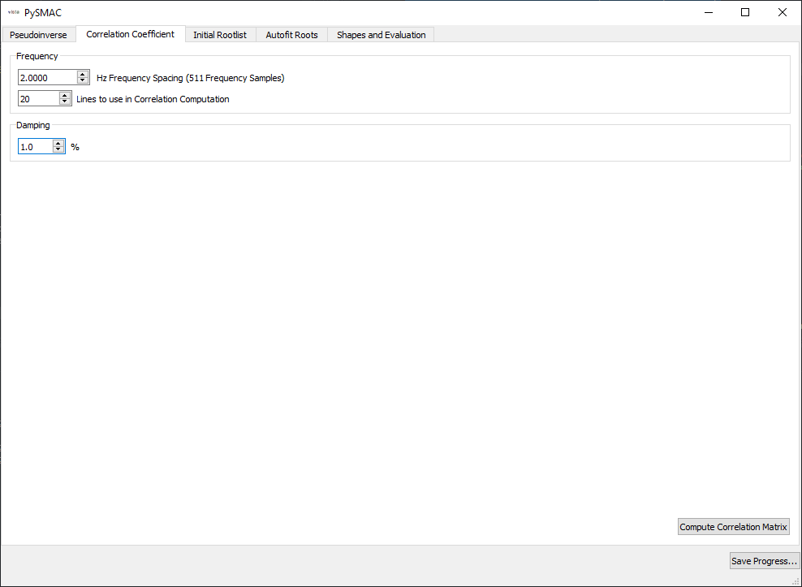{kind=link}
The third page selects the initial roots that will be optimized by the solver.
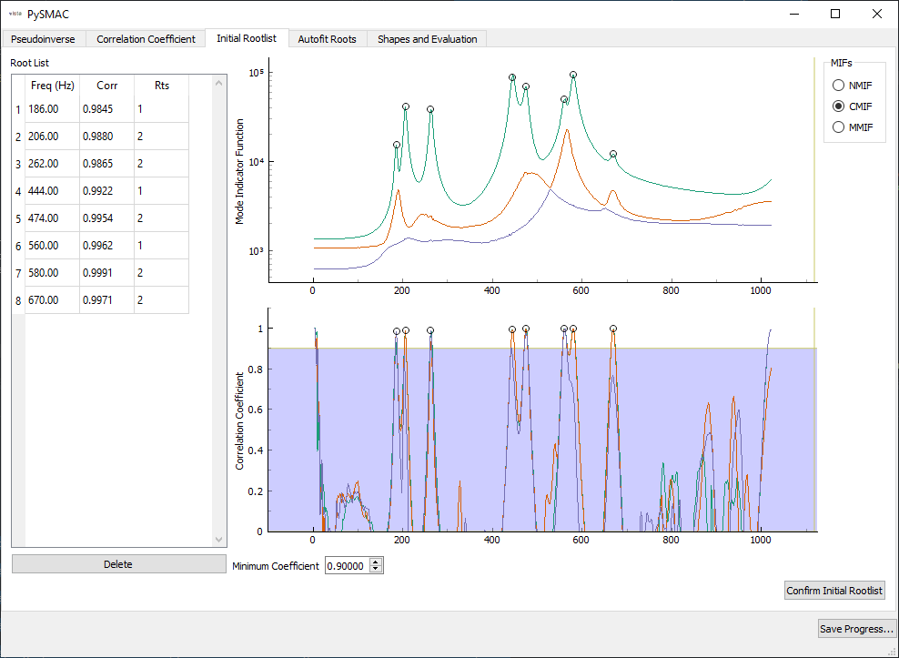{kind=link}
We then select optimizer parameters for SMAC’s autofit.
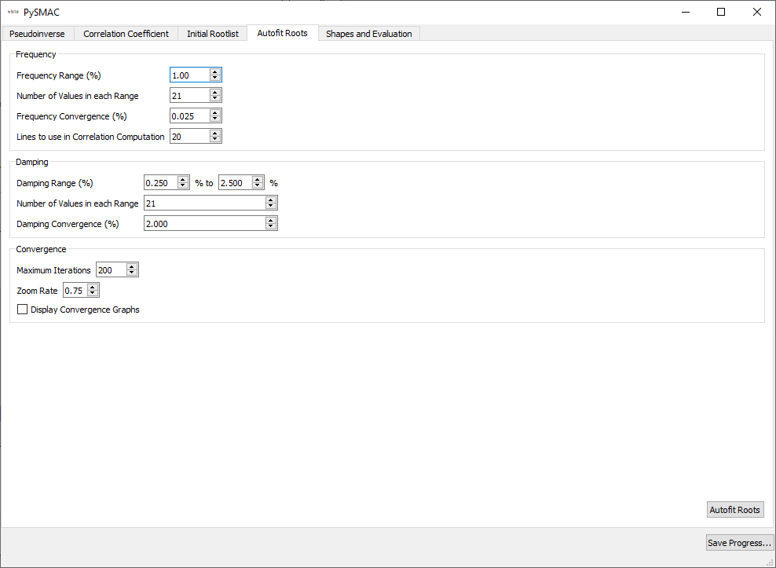{kind=link}
Finally, we select the final shapes. At this page we also resynthesize FRFs and mode indicator functions, plot shapes and the Modal Assurance Criterion.
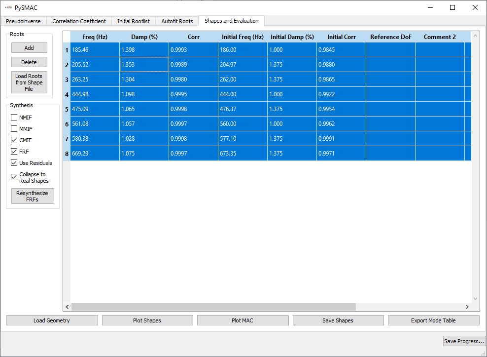{kind=link}
FRFs and CMIFs are visualized in the sdpy.data.GUIPlot
GUI, so we can quickly switch between shapes and compare resynthesized to
experimental data.
{kind=link}
{kind=link}
The MAC can also be plotted to visualize the independence of the shapes.
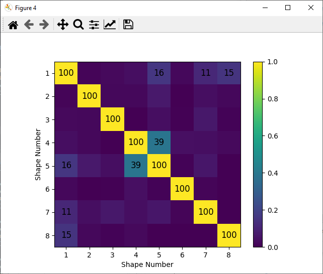{kind=link}
Shapes are saved to the file 'rattlesnake_test_shapes_smac.npy' so they
can be loaded into the script without re-running SMAC.
Similarly, PolyMax can be run by calling the sdpy.PolyMax_GUI
class from the IPython console.
In [13]: sdynpy.PolyMax_GUI(frfs)
Out[13]: <sdynpy.modal.sdynpy_polymax.PolyMax_GUI at 0x14fff4c5d30>
The first page of the SDynPy PolyMax implementation allows users to select the frequency range of the analysis. Also selected is the number of poles to use in the polynomial fitter.
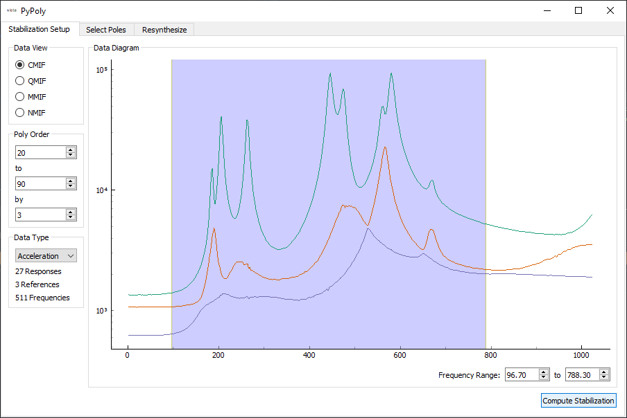{kind=link}
Once the poles are solved, a stability plot is presented. The user can click on individual icons on the stability plot to select given poles to use in the resynthesis.
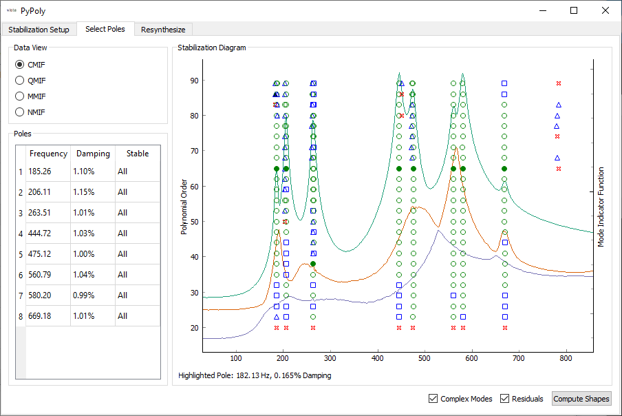{kind=link}
With the poles selected, shapes can be computed. Resynthesized FRFs are plotted for the user to investigate.
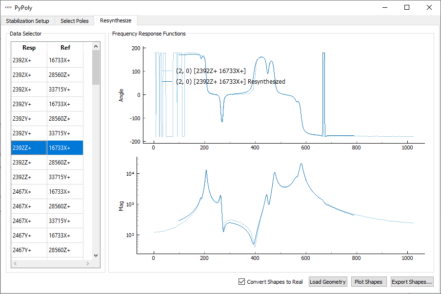{kind=link}
Shapes are saved to the file 'rattlesnake_test_shapes_polymax.npy' so they
can be loaded into the script without re-running PolyMax.
Analyzing Modal Parameters
At this point, we would like to analyze the modal parameters. We will load the
shape files into our script for analysis using the
sdpy.shape.load method.
# Load the shape files from our curve fitting into the script
test_shapes_smac = sdpy.shape.load('rattlesnake_test_shapes_smac.npy')
test_shapes_polymax = sdpy.shape.load('rattlesnake_test_shapes_smac.npy')
We also want to extract finite element shapes from the Exodus file using the
sdpy.shape.from_exodus
method.
# Extract the finite element shapes
fem_shapes = sdpy.shape.from_exodus(exo)
# Only keep shapes below 2000 Hz for comparison
fem_shapes = fem_shapes[fem_shapes.frequency < 2000]
In order to make meaningful comparisons between shapes, we need to reduce to a
common set of degrees of freedom. This can be easily done in SDynPy by indexing
a sdpy.ShapeArray with a
sdpy.CoordinateArray
containing the degrees of freedom to keep. Note that the shape arrays are
returned in a number-of-modes x number-of-degrees-of-freedom array, which is
transposed from the typical mode shape matrix, so we transpose the array
to orient it the typical way. We can also use the shape matrices to create a
sdpy.ShapeArray object for the
finite element shapes reduced to the test degrees of freedom.
# Reduce the shapes to a common set of degrees of freedom to compare shapes
# Extract the degrees of freedom from a test shape
response_dofs = test_shapes_smac[0].coordinate
# Can extract a shape matrix by indexing the shape arrays with a CoordinateArray
test_shape_matrix_smac = test_shapes_smac[response_dofs].T
test_shape_matrix_polymax = test_shapes_smac[response_dofs].T
test_shape_matrix_fem = fem_shapes[response_dofs].T
# Create an actual ShapeArray object
fem_shapes_reduced = sdpy.shape_array(response_dofs,
test_shape_matrix_fem.T,
fem_shapes.frequency,fem_shapes.damping)
sdpy.correlation contains
a number of functions that can be used to correlate data. We will use
sdpy.correlation.mac
to compute the Modal Assurance Criterion matrix. The sdpy.correlation
module also contains a sdpy.correlation.matrix_plot
function that provides a nice visualization of the Modal Assurance Criterion matrix.
# Look at correlation between shapes from different tests/analyses
mac_smac_polymax = sdpy.correlation.mac(test_shape_matrix_smac,test_shape_matrix_polymax)
mac_smac_fem = sdpy.correlation.mac(test_shape_matrix_smac,test_shape_matrix_fem)
mac_polymax_fem = sdpy.correlation.mac(test_shape_matrix_polymax,test_shape_matrix_fem)
# Plot the mac matrix between the
sdpy.correlation.matrix_plot(mac_polymax_fem)
{kind=link}
Another way to compare shapes is to plot them on top of one another so the
differences are obvious. We can use the Modal Assurance Matrix to figure out
the best matches between test and analysis. Then we can use the
sdpy.shape.overlay_shapes
function to create both geometry and shapes that combine two geometries and
shapes. Using the optional color_override argument allows setting a
different color to each geometry to aid in visualization. We can then set up
the plotting arguments and plot the combined shapes. We also save out an animation
of the first mode to a .gif file.
# Compare shapes by overlaying them
# Find the best match in the FEM to each of the test shapes
fem_matches = np.argmax(mac_polymax_fem,axis=1)
# Overlay the shapes and geometry
combined_geometry,combined_shapes = sdpy.shape.overlay_shapes(
(test_geometry,test_geometry),
(test_shapes_polymax,fem_shapes_reduced[fem_matches]),
color_override=[1,11])
# Plot the shapes to set up the animation
geometry_kwargs = {'view_up':[0,1,0],'line_width':5,'node_size':8}
# Plot the shapes
plotter = combined_geometry.plot_shape(combined_shapes, plot_kwargs=geometry_kwargs)
# Save the initial mode showing as a .gif
plotter.save_animation('mode_1.gif')
The overlaid shapes show good agreement between test and analysis.
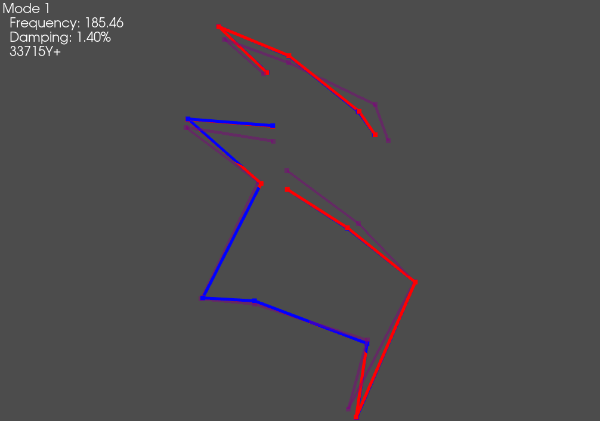{kind=link}
Documentation Generation
While SDynPy is perfectly capable of generating and saving figures and animations of mode shapes, it is often tedious to export the identical information for a large number of modes. Therefore SDynPy has the ability to export typical documentation in either Powerpoint or LaTeX format. This export will generally not be enough to completely describe a given test, but it is easy enough to take the exported data and add it to a completed report.
SDynPy can create a Powerpoint presentation using the
sdpy.doc.create_summary_pptx
function. This function can either take a filename to save the output presentation
as, or it can take an existing presentation object that it will add to. This latter
approach is most useful for creeating a presentation with an existing template or
design. If only a filename is specified, the output presentation will consist of
data over the default white slide backgrounds. We will therefore load in a
Powerpoint containing the Sandia corporate template to save us from having to
reformat the presentation into that template at a later time.
Note that different templates have different types of slides, so if using a custom
template, ensure that the title_slide_layout_index, content_slide_layout_index,
and empty_slide_layout_index point to the proper layouts within the presentation.
Otherwise, errors may occur if, for example, SDynPy tries to access the subtitle on a
slide that does not have a subtitle placeholder on it.
# Open up a presentation with the Sandia theme
prs = pptx.Presentation('C:/users/dprohe/documents/Powerpoint_Sandia_Theme.pptx')
# Fill the presentation with our analysis data
sdpy.doc.create_summary_pptx(prs,
title='BARC Modal with Rattlesnake',
subtitle='A SDynPy Demonstration',
geometry = test_geometry,
shapes = test_shapes_polymax,
frfs=frfs,
geometry_plot_kwargs = geometry_kwargs,
content_slide_layout_index=2,
empty_slide_layout_index=4)
# Save the presentation out
prs.save('rattlesnake_test_quicklook.pptx')
The output presentation is then formatted as specified and has the test information automatically populated. A geometry overview slide is presented, as well as a modal slide. Then there is one slide for each mode showing the natural frequency, damping ratio, and animated shape.
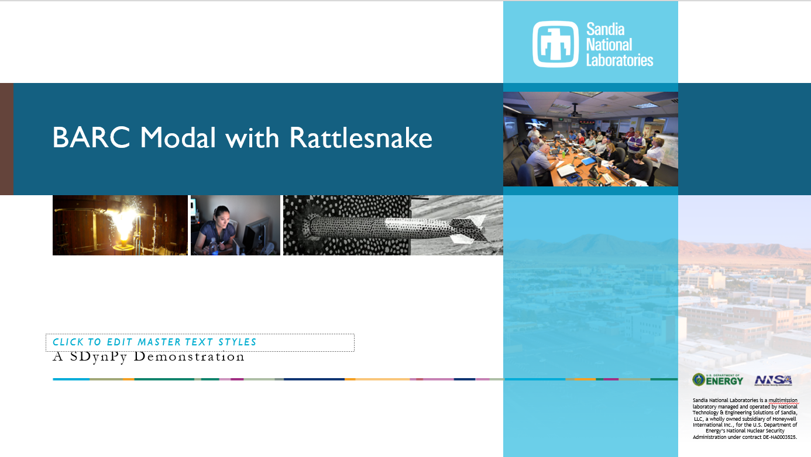 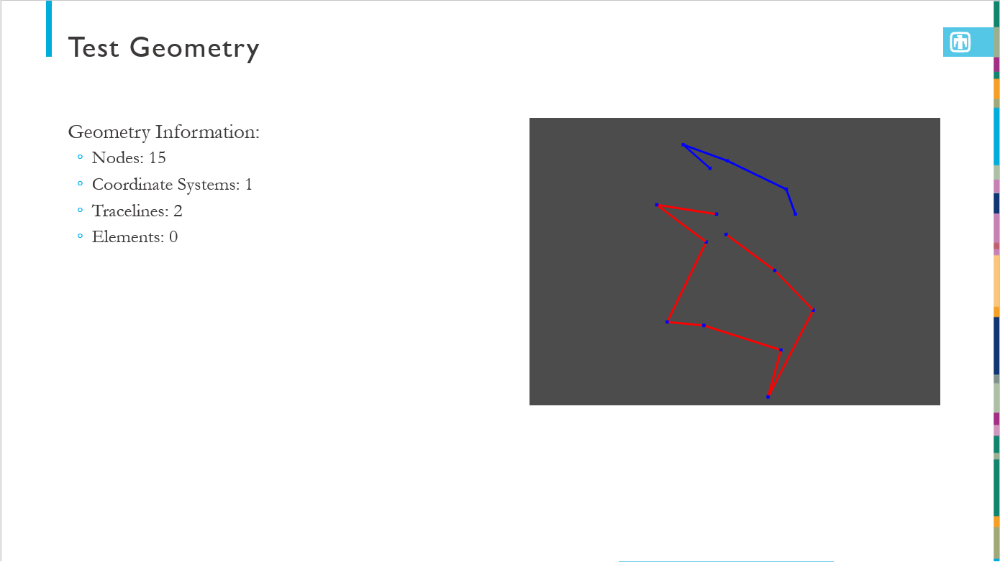 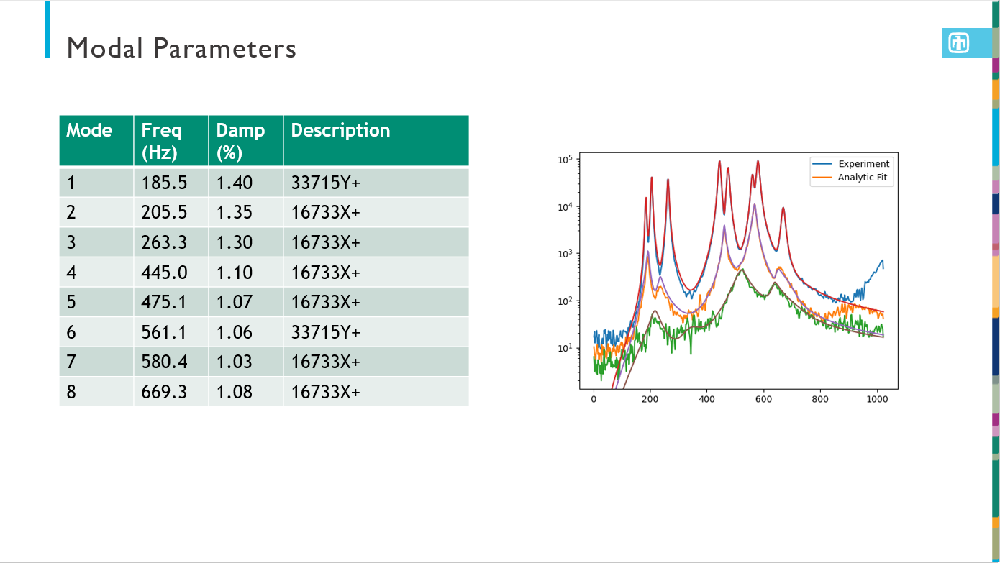 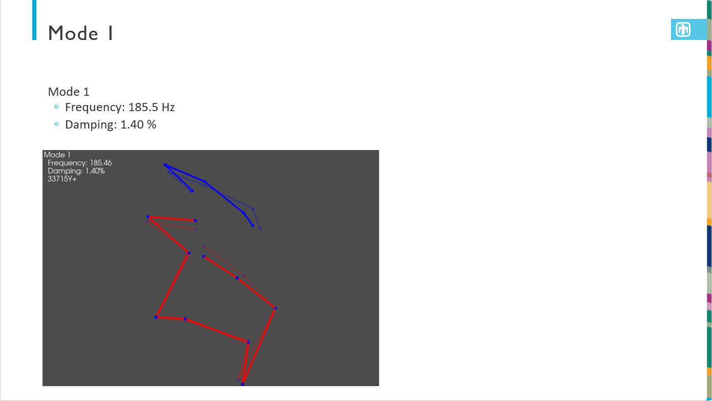{kind=link}
{kind=link}
{kind=link}
{kind=link}
If a report document is required, SDynPy can also export LaTeX source code.
To remain as flexible as possible, SDynPy does not export a complete document,
as it cannot know which document class or template the data may be used in.
Instead, SDynPy outputs a portion of a LaTeX document that can be included in
a full document. This is done using the
sdpy.doc.create_latex_summary
function. It is strongly suggested to set the figure_basename argument
of that function to a subdirectory; a large number of figures will be generated
to allow animation of the shapes inside the exported PDF.
# Create a LaTeX snippet that can be included in a larger document
sdpy.doc.create_latex_summary(
figure_basename='figures/rattlesnake_test.png',
geometry = test_geometry,
shapes = test_shapes_polymax,
frfs = frfs,
output_file = 'rattlesnake_test_memo_content.tex',
geometry_plot_kwargs = geometry_kwargs)
This output LaTeX source code can be easily included in another document, for example, this minimal Article class
\documentclass[]{article}
\usepackage{graphicx}
\usepackage{animate}
\usepackage{caption}
\usepackage{subcaption}
%opening
\title{SDynPy Example LaTeX Documentation}
\author{Dan Rohe}
\begin{document}
\maketitle
\begin{abstract}
\end{abstract}
\section{SDynPy Content}
\input{rattlesnake_test_memo_content.tex}
\end{document}
produces the following PDF:
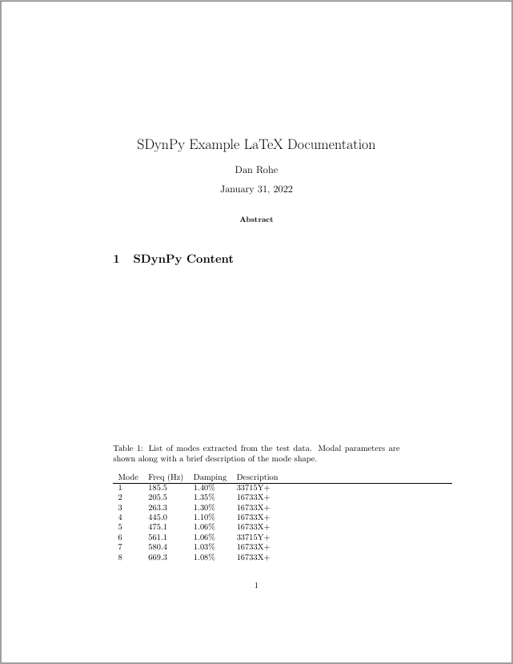 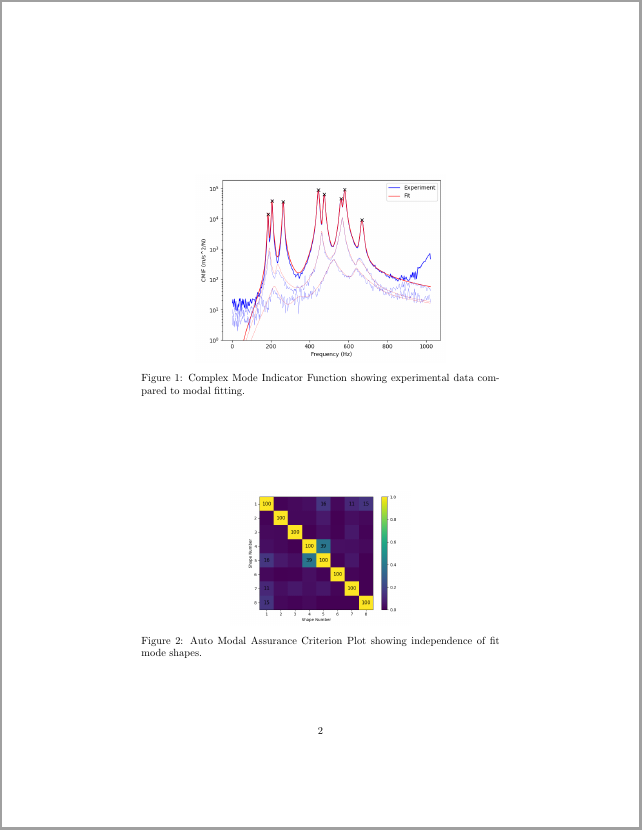 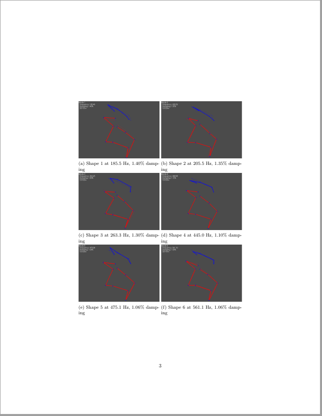{kind=link}
{kind=link}
{kind=link}
The user could obviously add context surrounding the exported content to describe the test setup, etc.
Exporting to Exodus
Finally, in order to share modal data with analysts who may be updating a model, it is often useful to export data to their finite element format so the same postprocessing tools can be used to visualize test and analysis results. We will therefore export our results to exodus format.
It can be, however, difficult to gain an intuitive understanding about what is happening in test shapes, particularly when some nodes have a limited number of degrees of freedom (e.g. displacements from a uniaxial accelerometer). Finite element expansion techniques can be used to “fill in the gaps” of a test model to make it easier to visualize the deformations of a given shape.
We will therefore perform SEREP expansion of the test data using the finite element shapes as basis functions. To do this, we solve for modal coefficients that multiply the FEM shapes to produce the test shapes. We can use the Modal Assurance Criterion matrix to help identify which finite element mode shapes should be included in the expansion.
q = np.linalg.lstsq(test_shape_matrix_fem[:,:14],test_shape_matrix_polymax)[0]
We then want to multiply this coefficient by the full finite element shapes to
estimate what the test shapes would look like in the full finite element space.
While we could extract the full finite element shapes from the finite element
model, multiply them by the coefficients q, and then rebuild the Exodus
file displacements, we can instead use the
sdpy.ExodusInMemory.repack
method, which is designed to produce new Exodus results that are a linear
combination of old Exodus results. We will first load our
sdpy.Exodus object into
memory to obtain an sdpy.ExodusInMemory
object. Note that we need to ensure that we load in the same time steps that
were used in the expansion to make sure all matrices are properly sized.
sdpy.ExodusInMemory.repack
makes no assumptions what the time steps in the model should be, so it is up to
us to fill that information in with the test frequencies.
# Load the Exodus object into memory
fexo = exo.load_into_memory(variables=['DispX','DispY','DispZ'],timesteps=np.arange(14),
blocks=[1,2])
# Linearly combine the existing shapes into new shapes
fexo_repack = fexo.repack(q)
# Fill in the abscissa data (frequencies in this case)
fexo_repack.time = test_shapes_polymax.frequency
If we want to plot the new shapes in SDynPy, we could load the shapes back into
a sdpy.ShapeArray object, and
even combine with the finite element shapes for comparison.
# Plot expanded shapes against finite element shapes
# Load shapes into sdynpy ShapeArray object
expanded_shapes_polymax = sdpy.shape.from_exodus(fexo_repack)
# combine the shapes
combined_expanded_geometry,combined_expanded_shapes = sdpy.shape.overlay_shapes(
(fem_geometry,fem_geometry),
(expanded_shapes_polymax,fem_shapes[fem_matches]),color_override=[1,11])
# Plot the shapes overlaid
plotter = combined_expanded_geometry.plot_shape(
combined_expanded_shapes,{'view_up':[0,1,0],'node_size':0},
deformed_opacity=0.5,undeformed_opacity=0)
plotter.save_animation('expanded_mode_1.gif')
{kind=link}
We can also write out both the test data and expanded data to Exodus files to visualize in external software.
# Create an ExodusInMemory object from sdynpy objects
fexo_out = sdpy.ExodusInMemory.from_sdynpy(test_geometry,test_shapes_polymax)
# Write it to a file
fexo_out.write_to_file('rattlesnake_test_output.exo',clobber=True)
# Repeat with the expanded data
fexo_out = sdpy.ExodusInMemory.from_sdynpy(fem_geometry,expanded_shapes_polymax)
fexo_out.write_to_file('rattlesnake_test_output_expanded.exo',clobber=True)
The Exodus files can then be loaded into an external software such as Paraview for visualization, which provides more flexibility than exists in SDynPy.
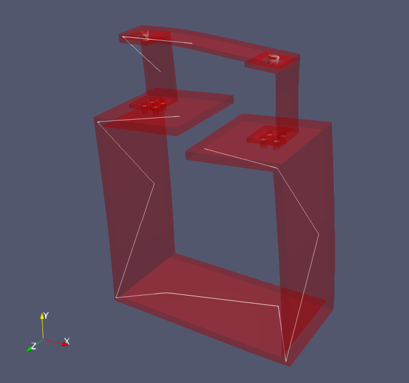{kind=link}